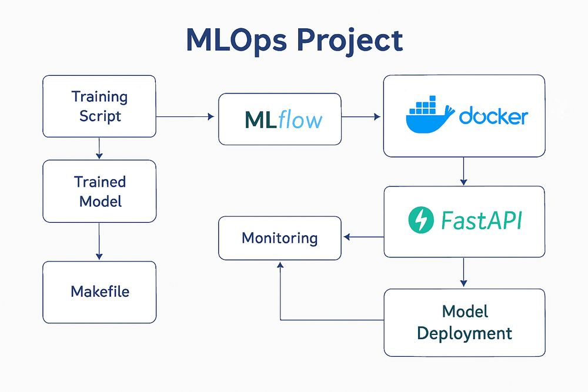

Featured Projects
A curated collection of end-to-end data pipelines, machine learning systems, and full-stack applications built for performance and scalability.

ResearchBridge
Python & LLM APIs Research Intelligence Platform
Solo-built platform that takes a research idea or paper and returns an evidence-grounded assessment — novelty, gaps, and feasibility — via PostgreSQL + pgvector retrieval and LLM-based knowledge extraction, with every claim tied to cited sources.

Estate-Mind
Pandas & Plotly Tunisian Real Estate Data Pipeline & EDA
Reproducible pipeline cleaning and standardizing multi-source scraped listings, with advanced EDA — price distribution, density heatmaps, and property-segment clustering — for Tunisia's second-hand real estate market.

Smart Inventory Forecasting & Replenishment Platform
Fastify & MLflow Production-Style Forecasting System
Containerized platform with data ingestion, feature engineering, rolling backtests, and ETS/ARIMA model selection tracked in MLflow. Forecasts and accuracy metrics are persisted to PostgreSQL and served through JWT-protected Fastify APIs.
View Project ↗
ML Project — MLOps Pipeline
scikit-learn & Docker Reproducible Training & Deployment
End-to-end scikit-learn pipeline with MLflow experiment tracking, versioned artifacts via Joblib, and a containerized inference app for reproducible deployment.
Engineering
Robust Solutions.
Every system is approached with a focus on reliability, scalability, and type-safety. I don't just write scripts; I architect production-oriented platforms bridging APIs and predictive analytics.
3+
Major Projects
2+
Years Experience
3
Professional Certs
100%
Open-Source First
Seeking an End-of-Studies Internship
I am looking for a 6-month PFE opportunity in Data Science, Data Engineering, or MLOps.
Get in touch ↗